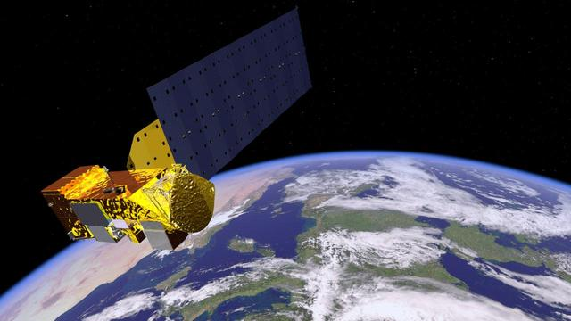
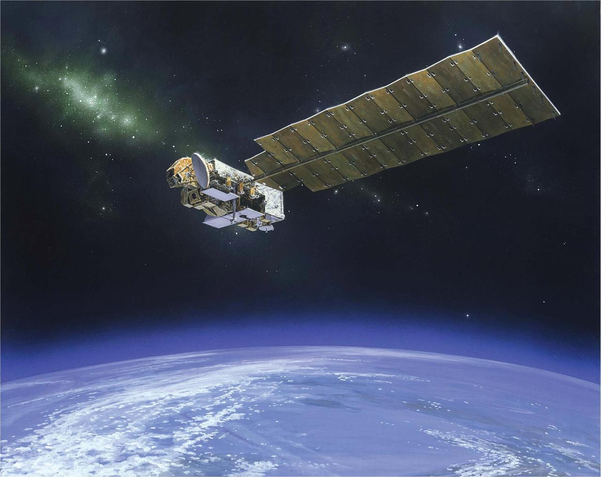
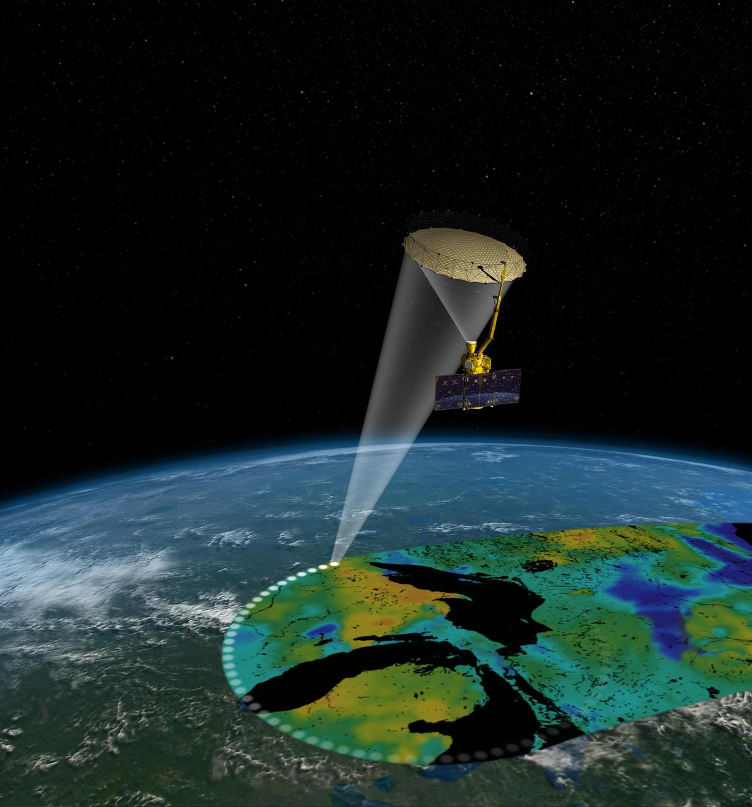

For nearly fifty years, SSAI has turned what we see from space into knowledge that improves life on Earth.
At the top of the world, a field of white domes catches every polar‑orbiting satellite, pass after pass.

Above a sea of clouds on a sleeping volcano, the great telescopes keep watch on Earth and the sky around it.
Seventy‑metre dishes listen across the solar system — the craft of antennas and signals that keeps Earth's satellites in reach.

A perfect Y of dishes splayed across the high desert, listening to a universe of faint radio light.

A hundred metres of steel in a radio‑silent valley — the last note before home.
Right here, beside NASA's Goddard Space Flight Center, SSAI turns raw light from across the planet into decisions the world can trust.